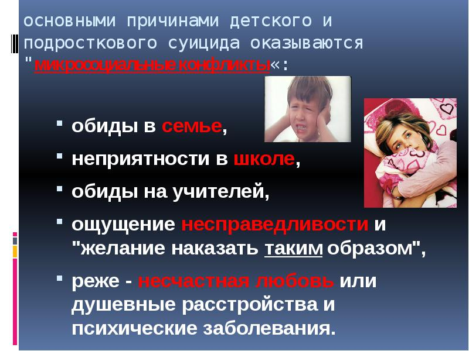

Өз-өзіне қол жұмсау
Бүгінгі таңда жасөспірімдер арасында көп кездесетін мәселелердің бірі болып келеді. Жасөспірімдер – қоғамның әлсіз буыны.
Суицид (лат.: sui caedere — өзін өлтіру) — адамның өзіне-өзінің қиянат жасап, өз өмірін қиюы.Қазіргі кезде адамзаттың өз өміріне балта шабуы-қоғам дертіне айналып барады.Мәселені осы жерден бір қайыра тұрып, суицид сөзінің қашан, қайдан енгеніне тоқтала кетсек. Бұл терминді 1947 жылы итальян психологы Г.Дэзен енгізген. Ол бұған «өзін-өзі өлтіруге әрекет ету» деп түсінік береді. Жыл сайын 10-20 миллион адам суицид жасауға бекінеді. Олардың бір миллионға жақыны жарық дүниемен қош айтысады. Алдыңғы қатарлы суицид жасаушылардың отаны ретінде, басқасын айтпағанда, көрші алпауыт мемлекеттер - Ресей мен Қытай, Қазақстанды атауға болады. Қазіргі таңда, Қазақстанды алаңдатып отырған жәйт бұл, жеткіншек балалардың суицид ауруына көптеп душар болуы. Суицид - қатты қажыған, шарасыздықтан, шаршағанда, немесе бір жағдайда шешімін таба алмай тығырыққа тірелген адамдарда және санасы әлі дамып, жетіліп болмаған жеткіншектік ұл-қыздардың арасында кездеседі. Жеткіншек кезеңде суициалдық мінез-құлықтың кейбір өзгешеліктері болады.
Жеткіншектер арасында ересектерге қарағанда өзін-өзі өлтіруге әрекет жасау жиі кездеседі. Бірақ олардың азғана бөлігі өздерінің қойған мақсатына жетеді.Суициалдық мінез-құлық бұл жаста көп жағдайда демонстративтік сипат,сонымен бірге байбаламдық сипат алады.Психолог-ғалым А.Е.Личконың көрсеткеніндей, тек қана жеткіншектердің 10 пайызы шынайы өлгісі келетін ниет білдірсе, ал 90 пайызы көмекке шақырған жан-айқайы болып есептелінеді. Міне, осы жағдайлардың барлығында психолог пен отбасының көмегі қажет. Өкінішке орай, көпшілік психолог қызметінің не екеніне және оның не үшін қажеттігіне мән бере бермейді. Психологты көп жағдайда психиатрмен шатастырады, сондықтан да оның алдына баруға ұялады. Ал бұл екеуінің арасындағы айырмашылық бар. Қарапайым сөзбен айтқанда, психиатр ауруларды емдейді, ал психолог – психикалық тұрғыдан сау адамдарға кеңес беріп кезіккен мұқтаждықтан шығуға көмектеседі. Дегенмен, депрессиялық жағдайда адамға көбінесе отбасы мүшелерінің шынайы қамқорлығы, жақындығы, түсіністігі мен демеуі қажет. Депрессиялық жағдайға түскен адам жиі агрессиялы (ұрысқа, қақтығысқа бейім) болады. Сонымен бірге, оның агрессиясы бірінші кезекте өзіне, содан соң жақынына және қоршаған ортасына бағытталады. Көп жағдайда жақындары немесе қоршаған ортасы оның бойындағы өзгерістерді түсінбейді де, қабылдай да алмайды. Ал бұл оны көптеген тығырыққа тіреп, соңы суицидке әкеліп соғуы мүмкін. Сондықтан, жеткіншек шақтағы жастарға, оқушыларға кез-келген жағдайда жайменен түсіндіру қажет. Және ата-ана өз балаларының жағдайларына жеткіншек шағында көбірек көңіл бөлуі қажет.
Ғалымдардың айтуынша суицидтің үш түрі бар.
Біріншісі – шынайы суицид Оған барған адам өмірден түңіледі, үнемі көңілсіз болып жүреді, өлгісі келеді. Нақтырақ айтқанда өмірдің мәнін жоғалтады
Екінші түрі – жасырын суицид . Бұл түрінде адам өз-өзін өлтіру жақсы іс еместігін түсінеді. Бірақ қиындықтан шығар шара, жол жоқ болып көрінгендіктен, өлімге апаратын істерге бас тігеді. (Мысалы: нашақорлық, алкоголизм т.б).
Үшінші түрі – жариялық суицид. Өзін-өзі өлтіргісі келгендердің көбі өлместен бұрын өзгелердің назарын өзіне аударғысы келеді. (Мысалы біреумен ренжіссе, қолына суық қару алып, болмаса арқан, жіп ала жүгіріп, «өлем» деуі.)
Қазақстанда кісі өлтіруден өзін-өзі өлтірушілер көп.
Әлем бойынша әрбір 20 секунд сайын бір адам өз өміріне қол жұмсайды. Ал, жыл сайын 1 миллион адам өзін ажалға қияды, сондай-ақ, шамамен 20 миллиондай жан өз өміріне балта шабуға әрекет жасайды. Олардың 8 мыңы – қазақстандықтар, яғни республикада әр сағат сайын бір адам өз еркімен өмірмен қош айтысып жатады. Бір атап өтерлігі – елімізде адам өлтіргендерге қарағанда өз-өзін өлтіргендер саны әлдеқайда көп екен. Халықаралық анықтама қызметінің айтуынша, заман өткен сайын, әсіресе, соңғы елу жылдың ішінде суицид дерті өршіп барады. Мәселен, 1950 жылдан бері әлемдегі суицид оқиғасы 60 пайызға өскен екен.
Мысалы мен бірнеше мысалдар келтіріп өтейін: айта кету керек, жасөспірімдер арасындағы өз-өзіне қол жұмсау фактілерінің әрбір үшіншісі – қалыпты құбылыс, нақтырақ айтсақ, олар өлгісі келмейді, тек осы әрекеттерімен өздеріне назар аудартқысы келеді. Мамандар мұның өте қауіпті құбылыс екендігін айтады. Өйткені, өз-өзін өлтіруге талпынып аман қалған жасөспірімдердің келесі талпынысы міндетті түрде өлімге алып келуі мүмкін.
Қазақстан Дүниежүзі бойынша суицидтен 3-ші орында тұр. Жыл сайын 1 миллион адам өзін ажалға қиса солардың 8 мыңы – қазақстандықтар, яғни республикада әр сағат сайын бір адам өз еркімен өмірмен қош айтысып жатады. Бір атап өтерлігі-елімізде адам өлтіргендерге қарағанда өз-өзін өлтіргендер саны әлдеқайда көп екен. Суцидпен көз жұмғандардың 44% өзіннің өліміне мына адам кіналі деп хат жазып қалдырады. Олардың кінәлі деп тапқаны мыналар:
- «барлығы» -20%
- Жақын адамым – 12%
- Бастық – 8%
- Ешкім емес – 4%.
Менің бұл мәселеге қатысты жеке көзқарасым суицид оқиғасы ең алдымен әлеуметтік жағдайы нашар, инфрақұрылымы дамымай қалған, экономикасы мен әлеуеті артта қалған елдерде көп орын алады.
Дүниежүзілік Денсаулық Сақтау Ұйымының мамандары адамдардың өз өміріне қол жұмсауына себеп болатын мынадай факторларды көрсетеді:
- 2 % -Денсаулығының нашарлығынан
-3 % -Қаражат қиындығынан .
-Өмір сүрудің ауырлығынан- 1.4 %
-Құмарлықтан- 6%
-Отбасы келіспеушілігінен- 18 %
-Рухани дерттен -18 %
-19 %- Жазасын өтеуден жалтару мақсатында осындай қатерлі қадамға барады екен.
Ал өзін-өзі өлтіру фактілерінің 41 % -і неден болатыны белгісіз күйде қалып отыр. Бұл мәселедегі ең күйзелтетіні, суицидтің жасөспірімдер мен жастар арасында көптеп кездесуі.

